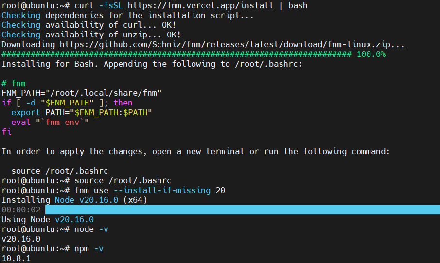
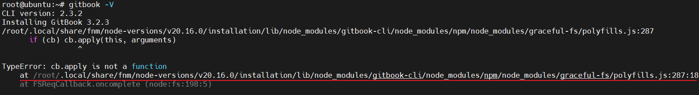

1. Node.js安装(Linux)
依次执行以下命令（需要开启代理）：
curl -fsSL https://fnm.vercel.app/install | bash
source ~/.bashrc
fnm use --install-if-missing 20
node -v # 显示安装的nodejs版本
npm -v # 显示安装的npm版本
显示版本则代表安装成功：

2. GitBook安装
执行以下命令，安装gitbook-cli：
npm install gitbook-cli -g
安装完成后，执行gitbook -V，此时会报一个错：

打开错误中的polyfills.js文件，注释掉以下内容：

保存，重新执行gitbook -V，等待GitBook 3.2.3安装完成。
3. GitBook初始化
打开 /root/.gitbook/versions/3.2.3/lib/init.js 这个文件，
将第 72 行的 return fs.writeFile(filePath, summary.toText(extension));替换为：
return summary.toText(extension).then(stx=>{return fs.writeFile(filePath, stx);});
保存后，创建一个空文件夹，进入该文件夹并执行 gitbook init
这时会发现出现两个文件：README.md 与 SUMMARY.md。README.md 是用来写简介的，SUMMARY.md 是用来写目录的。